A Binary Decision Diagram (BDD) is a rooted, directed acyclic graph. A BDD is used to compactly represent the truth table, and therefore complete functional description, of a Boolean function. Vertices of a BDD are called terminal if they have no outgoing edges and are called non-terminal otherwise. There is one non-terminal vertex, called the root, which has no incoming edge. There is at least one and there are at most two terminal vertices, one labeled 0 and one labeled 1. Non-terminal vertices are labeled to represent the variables of the corresponding Boolean function. A non-terminal has exactly two outgoing edges, labeled T and/or F, and the vertices incident to edges outgoing from vertex v are called 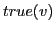 and 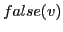, respectively. Associated with any non-terminal vertex v is an attribute called 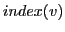 which satisfies the properties 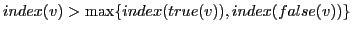 and 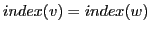 if and only if vertices v and w have the same labeling (that is, correspond to the same variable). Thus, the index attribute imposes a linear ordering on the variables of the BDD.
A Reduced Ordered Binary Decision Diagram (ROBDD) is a BDD such that: 1) There is no vertex v such that 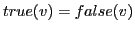; 2) The subgraphs of two distinct vertices v and w are not isomorphic. A ROBDD represents a Boolean function uniquely in the following way. Define 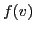, v a vertex of the ROBDD, recursively as follows:
| 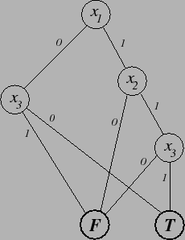 |
Figure 20 shows an example of a BDD and the function it represents. See the data structures section for details on how the BDDs are implemented in SBSAT. The following are some simple BDD operations that are used by preprocessing operations which are described in subsequent sections.
A BDD is constructed by attaching BDDs  and 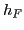, representing a
true and a false branch, respectively, to a vertex v
with some labeling x representing the root. We may think of the
operation to do this as being the following, in pseudo C++ style:
and 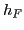, representing a
true and a false branch, respectively, to a vertex v
with some labeling x representing the root. We may think of the
operation to do this as being the following, in pseudo C++ style:
BDD ite(variable x, BDD  , BDD );
, BDD );
That is, ite returns a BDD with root v labeled x and
such that 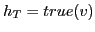 and  . But the actual
construction is such as to avoid building BDDs which are isomorphic to
existing ones, so the following is used to implement the construction
instead (it is too complicated to state here):
. But the actual
construction is such as to avoid building BDDs which are isomorphic to
existing ones, so the following is used to implement the construction
instead (it is too complicated to state here):
BDD find_or_add_node (variable x, BDD  , BDD );
, BDD );
This operation returns an existing BDD if there is one that matches
ite(x,  , ) already, and otherwise builds a new
BDD with root v labeled x, true branch
, ) already, and otherwise builds a new
BDD with root v labeled x, true branch  and
false branch (that is, false(v) = and
true(v) =
and
false branch (that is, false(v) = and
true(v) =  ). The BDDs
). The BDDs  and/or may have to
be constructed as well.
and/or may have to
be constructed as well.
The following two simple operations are used several times in
describing important BDD operations in subsequent sections. They are
given in pseudo C++ style:
BDD Reduce (variable x, BDD f) {
if (root(f) == x) return true(root(f));
return f;
}
BDD Reduce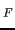 (variable x, BDD f) {
if (root(f) == x) return false(root(f));
return f;
}
Reduce( ,
, ) returns
) returns  constrained by the assignment of
T to variable
constrained by the assignment of
T to variable  and Reduce(
and Reduce( ,
, ) returns
) returns  constrained by the assignment of F to the variable
constrained by the assignment of F to the variable  .
.